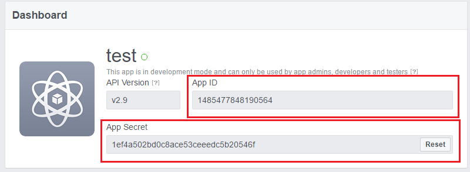
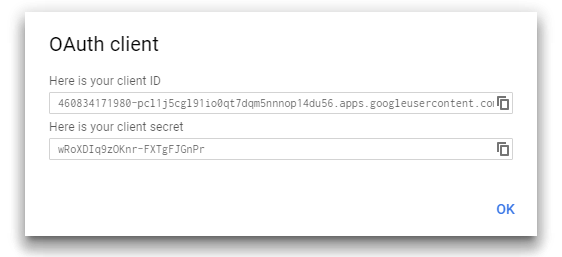
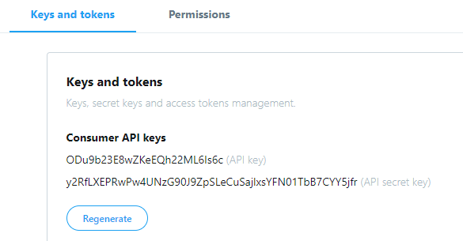

In order for social login buttons to work properly, you will need to register for an application on their respective sites and enter the credentials you receive into admin area -> settings -> authentication page.

- Register for regular facebook account, if you don't already have one.
- Open this url, click my apps in the top navigation bar, then Add a New App.
- Enter any display name, your email address and click Create App ID
- Click + Product in left sidebar, then Facebook Login, select Web, enter your site url. You can ignore the rest of the panels on this page (quickstart).
- Click Facebook Login > Settings and enter http://your-site-url.com/secure/auth/social/facebook/callback into Valid OAuth redirect URIs field.
- Click Status toggle in the navbar to make your application public.
- Click Settings -> Basic in left sidebar and copy/paste APP ID and APP SECRET into settings page.

- Register for regular google account, if you don't already have one.
- Open this url, create a new project, click Credentials in left sidebar, click Create Credentials select Oauth Client ID -> Web Application.
- Enter http://your-site-url/secure/auth/social/google/callback into Authorized Redirect URIs field and click Create.
- Click on Library in left sidebar, find Google+ API and enable it.
- Copy/paste Client ID and Client Secret into settings page.

- Register for regular twitter account, if you don't already have one.
- Open this url, click Create an App, enter anything into name and description fields, enter your site url into Website field.
- Enter https://your-site.com/secure/auth/social/twitter/callback into Callback URL field and create the app.
- Click on Keys and Tokens and Copy Api Key and Api Secret (Under consumer API keys) into bedrive settings page.
